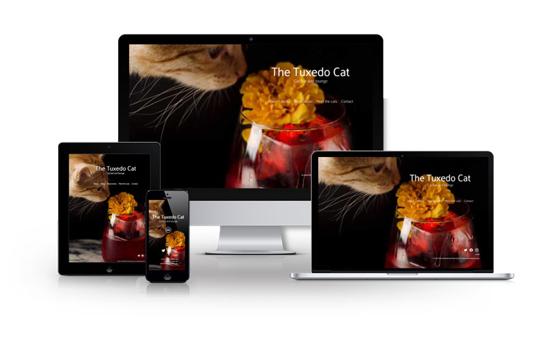

Lily Woods Photography
Business Brochure
3.5 weeks
HTML/CSS, JavaScript, SASS, GitHub
The Tuxedo Cat is a fictional bar and lounge where patrons can go and relax, sipping on a good drink while in the company of a cat. It was built for a group project as part of the BCIT Technical Web Development program. The website features a landing page, an interactive menu page, and reservation forms.
Team: Matt Hildebrand, Skye Yang
Role: Content Planner, UI Developer, Front-End Developer
Process
Planning
Our approach going into this project can be broken down into 4 main steps:
- Competitive analysis
- Content planning
- Wireframing and mockups
- Development
We first conducted research and analysis on potential competitors to gather information on what content to include and come up with keywords. Through our research, we found:
- Many cat cafes offer cat adoption through rescue partnerships
- Cafe cats have introductions so customers can recognise them
- Online booking/reservation is always available
- Food and drink menus are almost always available
With this information, we created a rough content plan and proceeded onto wireframes and mockups. Knowing that websites should be coded mobile-first, I started with the mobile mockups and built the desktop mockup with my teammate after it.
{kind=link}
{kind=link}
Click images to enlarge.
Development
After completion of the mockups, the work for development was divided between myself and my team member as follows:
I took charge of setting up the HTML structure for all the pages and styling for half of them, while my team member was tasked with styling the other half of the pages and JavaScript, as well as the mobile navigation. GitHub was our platform of choice for collaboration and version control.
Challenges and Takeaways
Being the second project to be assigned in the program, this website was built very early on when I had little knowledge of web development and web design in general. Now that the program is almost finished and I have much more knowledge, I can recognise a few areas where improvements can be made.
To begin, The Tuxedo Cat's Menu page is not visually accessible for users who can only navigate with keyboards; no outlines show when users are tabbed over the menu page buttons. This was initially a design choice made without knowledge of the :focus pseudo class's purpose and can be fixed by removing the line of code that hides the outline.
Menu page elements also do not adjust well with accessibility settings, breaking when the browser font size is adjusted to be bigger. This can be fixed by changing font sizes from px sizing to rem sizing.
Takeaways
While mistakes of this type are to be expected from a beginner, they are still very much worth learning from because of the impact they can have on a user's experience. Going forward, I'll do my best to approach projects with mindfulness for accessibility. User testing should also be a part of the process to determine usability and iron out prominent features.